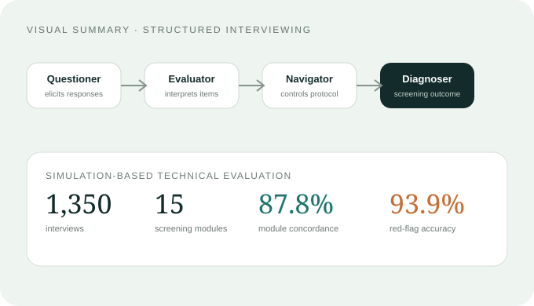
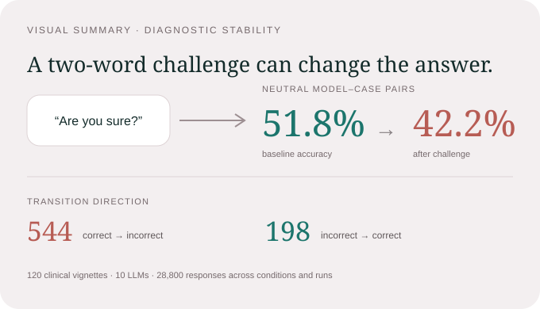

We study where computational systems meet human judgment.
Our research spans clinical interaction, population evidence, and neurophysiology. The common goal is not automation for its own sake—it is better evidence and better decisions.
Interaction level
Agentic systems with explicit responsibilities.
Psychiatry depends on sequential information gathering, context, uncertainty, and escalation. We design systems where those responsibilities are decomposed rather than hidden inside a single conversational model.
Current questions
- How should agents divide interview, evaluation, navigation, and safety roles?
- What should remain under human control in psychiatric workflows?
- How can simulation support training without becoming a substitute for supervised clinical experience?
Methods
- Multi-agent LLM orchestration
- Simulation-based evaluation
- Protocol-constrained dialogue
- Human-in-the-loop safety and escalation

Structured clinical interviewing and psychiatric screening
1,350 simulated interviews across 15 modules, including explicit safety-red-flag evaluation.
Evidence level
A model is not useful because it is confident.
We study what happens when model behaviour is perturbed by realistic interaction, and how causal and interpretable methods can separate predictive patterns from evidence that is meaningful for mental-health decisions.
Current questions
- How stable are clinical LLM decisions under conversational challenge?
- What should “validation” mean for patient simulations and digital twins?
- Which social and clinical signals explain heterogeneity in mental-health outcomes and access to care?
Methods
- Stress testing and adversarial evaluation
- Causal and interpretable machine learning
- Population and clinical epidemiology
- External and human-rater validation

Diagnostic instability under conversational challenge
Across neutral model–case pairs, baseline accuracy fell from 51.8% to 42.2% after a simple certainty challenge.
Neurophysiology level
Make biological signals computationally useful.
We connect computational neuroscience with clinically relevant measurement and stimulation—using AI to make neurophysiological workflows more reproducible and modeling to make intervention more individualized.
Current questions
- Can agentic tools make EEG preprocessing more transparent while preserving expert oversight?
- Which physiological signatures are informative for response to neuromodulation?
- How can personalized brain models guide deep-target non-invasive stimulation?
Methods
- EEG signal processing and AI-assisted preprocessing
- Biomarker discovery
- Personalized electric-field modeling
- Computational neuroscience and neural coding
What we will not optimize away.
Technical performance matters, but high-stakes mental-health research also needs explicit boundaries.
Automation should augment identifiable human responsibility, not obscure it.
Reported performance should be traceable to the task, population, comparator, and failure mode.
A metric is useful only when its relationship to an actual decision is understood.
Where possible, methods, code, and evaluation logic should be inspectable and reusable.
Built across disciplines and institutions.
Recent work includes collaborators spanning psychiatry, computer science, psychology, neuroinformatics, biomedical engineering, and simulation research.